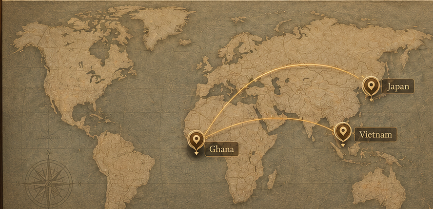

Where the game emerged and what materials people used.
A living archive of traditional play
ONE WORLD · MANY CULTURES · COUNTLESS GAMES
Games Across Time
Trace the games that travelled through generations. Explore the objects, stories and rituals that still connect people today.
01 Interactive atlas

Select a marked country
02 Featured collection
Three games. Three histories.
Prototype collection
03
THE CONNECTION
The rules change. The instinct to play does not.
Compare how strategy, ritual and community appear in games created thousands of kilometres apart.
04 A journey through time
How families, communities and ceremonies kept it alive.
See the game through video, animation and a digital 3D artefact.